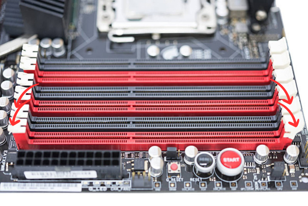
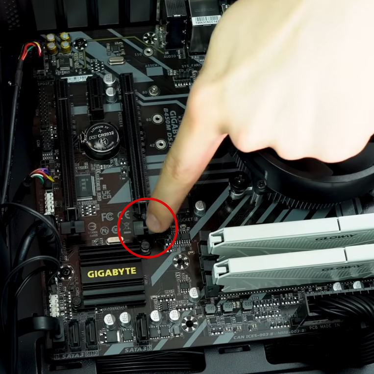
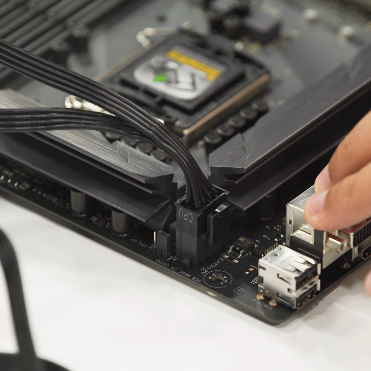

Como montar um pc?
Montar seu próprio computador do zero pode parecer um projeto desafiador, especialmente pela primeira vez. Os cabos e os fios podem se confundir e se emaranhar no que parece ser um bicho de sete cabeças, você pode achar que é muito complexo, muito caro ou demorado, mas não precisa ser!
Nessa página nós vamos explicar como você pode construir um computador pessoal passo a passo. Primeiro, vamos entender do que seu computador precisa para funcionar adequadamente, explorando as diferentes peças e orientando você no seu processo de montagem.
Quanto você pode pagar?
O valor que você dispõe para gastar com as peças de computador pode variar muito, por isso é uma boa ideia pesquisar antes e elaborar um orçamento realista com antecedência.
Se você busca o melhor desempenho possível em todos os componentes do computador, prepare o bolso! Processadores mais rápidos custam mais do que os mais lentos, por óbvio, e gerações mais novas de memória e armazenamento com mais capacidade geralmente custam mais do que as mais antigas que dispõe de menos recursos.
Já que a memória e o armazenamento representam grande parte do custo de um novo computador, ao montar seu próprio PC, você tem flexibilidade para customizar seu custo com esses componentes. Apesar dos custos com RAM e SSD aumentarem de acordo com a quantidade da capacidade oferecida, eles podem ser mais baratos do que comprar componentes pré-instalados que são frequentemente inadequados e precisam ser atualizados frequentemente.
Do que você precisa para montar?
As cinco principais áreas de hardware necessárias para montar qualquer PC são:
- Placa-mãe
- Processador (CPU)
- Memória (RAM)
- Armazenamento (SSD)
- Gabinete, ventoinhas e fonte de alimentação
Antes de começar, é importante lembrar que você também vai precisar de algumas ferramentas auxiliares para te ajudarem no processo, como chaves de fenda e philips, por exemplo.
- Antes de começar
- Adicione o hardware
- Instale sua memória
- Instale o HD ou SSD
- Teste o sistema
Também é de extrema importância considerar a compatibilidade entre os sockets disponíveis na placa mãe de sua escolha e dos outros componentes como memória e processador, uma vez que se os componentes não forem compatíveis entre si, você literalmente não vai conseguir encaixá-los. Para facilitar, nós vamos considerar que você já dispõe de peças totalmente compatíveis e vamos focar para a montagem em si dos componentes.
Se você ainda tem dúvidas sobre versionamento e compatibilidade de sockets, cheque nosso guia básico de funcionamento de cada componente principal clicando aqui.
Instalando o processador
Comece desembalando a sua placa mãe e processador.
Com sua placa mãe em mãos, procure pelo socket do processador. Caso sua placa disponha de socket do tipo LGA, procure pela capa de proteção do socket do processador. Caso sua placa receba processadores do tipo AMD, o socket é bem mais simples, com uma alavanca mais discreta e normalmente sem proteção.
1 — Na placa mãe segure e empurre a alavanca para baixo, puxando para o lado (1) e levante-a (2)

2 — Abra a tampa de proteção.

Não toque nos contatos do soquete ou na parte inferior do processador

3 – Segure o processador com o polegar e o indicador. Certifique-se de que o pino 1 do soquete está alinhado com o pino 1 do processador, e que os conectores do soquete estejam alinhados com os conectores do processador.
Abaixe o processador na vertical, sem inclinar ou deslizar o processador no soquete. Libere suavemente o processador, certificando-se de que ele esteja encaixado corretamente no soquete.

4 – Abra a placa de carregamento. Remova a tampa protetora da placa de carga. Não descarte a tampa protetora. Você deve substituir a tampa do soquete sempre que o processador for removido do soquete.

5 – É necessário um pouco de força para fechar a placa de carga. Pressione a placa de carregamento, feche e trave a alavanca do soquete.

Instalando o cooler
Para instalar o dissipador, siga as instruções abaixo com a placa-mãe já instalada no gabinete.
1 – Coloque o dissipador de calor com ventoinha na placa, alinhando os prendedores através dos orifícios.

Obs: Muita atenção para ao encaixe para não danificar o material de interface inferior do dissipador com a parte de contato com o processador.
2 – Empurre a parte superior de cada prendedor, iniciando pelas diagonais como ilustrado abaixo, enquanto segura com firmeza o ventilador do dissipador.
Você deve ouvir um clique ao pressionar cada prendedor. Puxe com cuidado cada prendedor para certificar-se de que todos os quatro prendedores estejam firmemente conectados.
Um prendedor não anexado faz com que a circulação de calor não seja adequada, e pode resultar em operação não confiável do processador.

3 – Conecte o cabo do cooler de 4 fios à entrada da placa-mãe também de 4 pinos.

Você também pode conectar o cabo do cooler a um conector de 3 pionos na placa-mãe, caso um conector de 4 pinos estiver indisponível.
Instalando as memórias RAM
Procure na placa-mãe os espaços dedicados à instalação de memória RAM conforme a ilustração.
Para uma melhor peformance, consulte o manual da placa-mãe para saber os slots corretos para instalação via dual-channel.
Geralmente o padrão de comunicação é de 1 + 3 e 2 + 4. Além disos, as placas mais modernas possuem cores distintas para facilitar na identificação de quais executam a comunicação dual-channel.
Para instalar as memórias, primeiro pressione os clipes das duas laterais de cada slot para baixo para receber o módulo.
Insira as memórias nos slots.
Verifique a posição correta do corte entre os conectores para não forçar os pentes na posição errada e acabar danificando as memórias ou o slot.


Empurre os módulos até que as presilhas retornem à posição original, fixando as memórias na placa-mãe.


Instalando a placa de vídeo (GPU)
O processo de instalação da GPU é semelhante ao processo dos módulos de memória RAM. Tudo o que você precisa fazer é encaixar o conector da sua placa de vídeo no conector PCI referente na sua placa-mãe.
A maioria das placas de vídeo atualmente utilizam o conector PCIe16, um soquete maior que possui um clip lateral semelhante aos slots de memória.
1 — Abra a presilha para receber a GPU
2 — Encaixe a GPU na placa-mãe, colocando suas saídas para vídeo em direção à parte de trás do computador, juntamente com os conectores do painel traseiro.
3 — Alimentação da GPU
Em placas de vídeo mais antigas, a alimentação acontece ao encaixar a GPU na placa-mãe, então você não precisa em conectar nenhum cabo para alimentação.
Já em placas de vídeo com mais potência, há necessidade de alimentação direto da fonte, através de um cabo PCIe de 6 ou 8 pinos, como ilustrado abaixo.
Atenção para alinhar a presilha do cabo com o gancho de trava da placa-mãe.
Parafusando a placa-mãe
Antes de prosseguirmos para a conexão do resto dos componentes gerais da placa-mãe, é importante que ela já esteja instalada corretamente no gabinete.
Para isso, basta você se guiar pelo painel traseiro da placa mãe, e alinhar os furos de instalação dos parafusos da própria placa-mãe com as do gabinete. Depois, é só parafusar.
Se você estiver com dificuldades para parafusar por culpa do espaço ocupado por algum componente, sinta-se livre para retirar o componente, parafusar e encaixar novamente se for mais fácil para você dessa maneira.
/i.s3.glbimg.com/v1/AUTH_08fbf48bc0524877943fe86e43087e7a/internal_photos/bs/2021/8/s/ESzBKfTBaplndmpLW89A/2014-12-18-foto1-marca.jpg)
/i.s3.glbimg.com/v1/AUTH_08fbf48bc0524877943fe86e43087e7a/internal_photos/bs/2021/C/0/Pt8QrCRMWsFlXKDnRPHQ/2014-12-18-foto5-marca.jpg)
A posição de instalação da fonte no gabinete é a mesma se seu gabinete tiver espaço encima ou embaixo.
Para instalar a fonte no gabinete, você deve parafusá-la com os cabos para dentro do gabinete, com o interruptor on/off com o conector de energia para fora.
Instalando a fonte
Para instalar a fonte, você precisa primeiro parafusá-la no espaço reservado no gabinete.
A depender do seu gabinete, esse espaço se encontra na parte inferior do gabinete, enquanto em outros esse espaço é na parte superior.
A posição de instalação da fonte no gabinete é a mesma se seu gabinete tiver espaço encima ou embaixo.
Para instalar a fonte no gabinete, você deve parafusá-la com os cabos para dentro do gabinete, com o interruptor on/off com o conector de energia para fora.
Conectando os cabos da fonte
Essa etapa é crucial para o funcionamento adequado da sua máquina.
É nela que vamos fornecer a alimentação adequada que cada componente necessita para seu desempenhar sua função.
As fontes de computador normalmente vem equipadas com mais cabos do que precisamos para montar um computador convencional.
Sendo assim, os principais conectores que vamos utilizar são:
- 24 pinos - Placa-mãe
- 8 pinos - CPU
- 6 + 2 pinos - CPUe
- SATA - HD/SSD
- Molex - Fans
ATX 24 PINOS
Sendo o maior conector disponível pela fonte, é fácil identificar qual seu slot de conexão, uma vez que é um espaço único em toda placa-mãe. É ele o principal fornecedor de energia para o funcionamento geral da placa.
Oberve que, como ilustra a imagem o conector possui uma presilha de fixação, que deve ser pressionada tanto para instalar o conector quanto para removê-lo, e também deve ser alinhado ao gancho de fixação presente no lado correto do conector da placa-mãe.
Além disso, placas mais antigas dispões de um conector de 20 pinos ao invés de 24 pinos, portanto você pode não precisar de utilizar o conector inteirisso, é por isso que o conector vem com 4 pinos separados para encaixe. Se esse for o seu caso, basta desencaixar os 4 pinos e conectar normalmente.
Para instalar basta encaixar o conector em seu devido espaço na placa-mãe.
Conector ATX 8 PINOS
É o cabo responsável por fornecer alimentação ao processador(CPU). Placas mais modernas podem necesitar de uma conexão de 8 pinos, é por isso que o conector, assim como o ATX 24 PINOS vem com seu conector divido em dois, a depender da sua necessidade.
Asssim como o conector 24 PINOS, este também possui uma presilha de fixação, que deve ser pressionada tanto para instalar o conector quanto para removê-lo, e também deve ser alinhado ao gancho de fixação presente no lado correto do conector da placa-mãe.
Para instalar basta encaixar o conector em seu devido espaço na placa-mãe.
Conector ATX 8 PINOS PCIexpress
É o cabo responsável por fornecer alimentação à placa de vídeo(GPU). Esse conector também dispõe de uma divisão, 6-2, para atender à necessidade dos seus componentes.
Como demonstramos na etapa de instalação da GPU, o conector da sua placa de vídeo, caso exista, estará na parte de cima do componente.
Basta instalar normalmente.
Conectores SATA
Os conectores SATA são conectores de periféricos em geral, mas são especificamente utilizados para fornecer energia para os componentes de armazenamento da sua máquina. São facilmente identificados pela sua estrutura de conexão em formato de "L", indicando sua conexão intuitiva no componente.
O seu SSD ou HD também dispõe de uma entrada em formato de L para conexão.
Depois de fornecer alimentação, você também deve conectar o cabo de comunicação do SSD com a placa mãe na outra entrada do hardware e na placa mãe.
Conectore MOLEX
Os conectores MOLEX são bem antigos, e sua função é fornecer alimentação para dispositivos como fans e controladores de fans.
Basta encontrar o conector macho e juntá-lo ao fêmea.
Depois de fornecer alimentação, você também deve conectar o cabo de comunicação do SSD com a placa mãe na outra entrada do hardware e na placa mãe.
Conectores do painel frontal
Para conectar os botões e funcionalidades do painel frontal do gabinete, você precisa de encontrar os pequenos cabos conectados ao gabinete, e conectá-los conforme mostra a imagem.
Conforme demonstra a imagem, você deve encaixar os conectores sempre na horizontal, da seguinte forma:
- POWER SW > PWR BTN
- HDD LED > HD_LED
- POWER LED+ > PLED+
- POWER LED- > PLED-
Você não precisa se preocupar em causar algum curto ou problema se errar os polos dos conectores, uma vez que o máximo que pode acontecer é os botões não funcionarem.
Finalização
Se você seguiu todos os passos corretamente, você deve ser capaz de ligar o computador com todos os componentes funcionando, caso contrário, sinta-se a vontade para recapitular os passos e checar se tudo está ok.
Se o problema persistir, e você acredita que esteja ocorrendo algum problema técnico, recomendamos consultar um técnico de informática para resolver seu problema.
Esperamos ter auxiliado agregando algum tipo de conhecimento para você, e que depois de ter lido esse artigo você seja capaz de montar um computador do zero ao funcional sem maiores dificuldes.